A hospital that can move
Rather than a fixed building, the hospital works as a flexible framework where space is a resource. It can expand, contract and shift in response to demand across Paddington, for emergency surges as well as everyday urban activity.
Structure and pods
A permanent structural base hosts a catalog of mobile, modular pods that carry program: patient rooms, diagnostics and treatment units, but also pharmacies, consultation spaces and short-term services.
- At ground level, three zones (reception and emergency intake, emergency waiting, medical services) separate critical from non-critical flows.
- Above them, three towers act as vertical infrastructure that hosts and services the pods.
- Pods are inspected, repaired and upgraded in an on-site facility, so the building adapts without stopping operations.
- Pods can detach and plug into nearby buildings, forming a distributed healthcare network across the neighborhood.
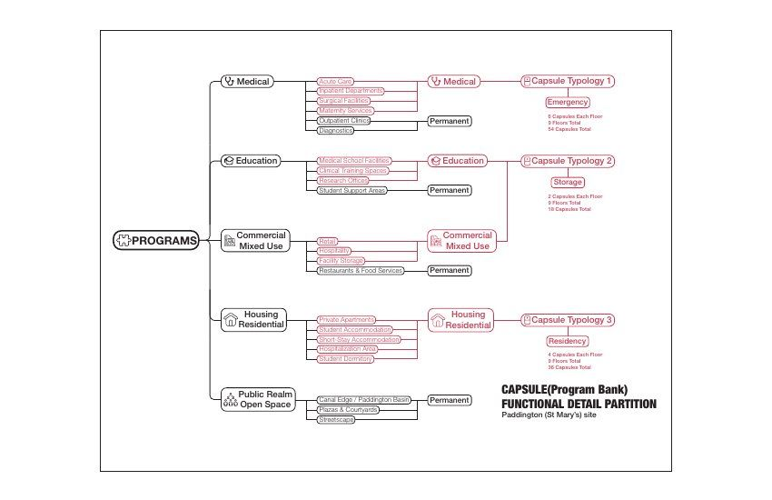
Physical models
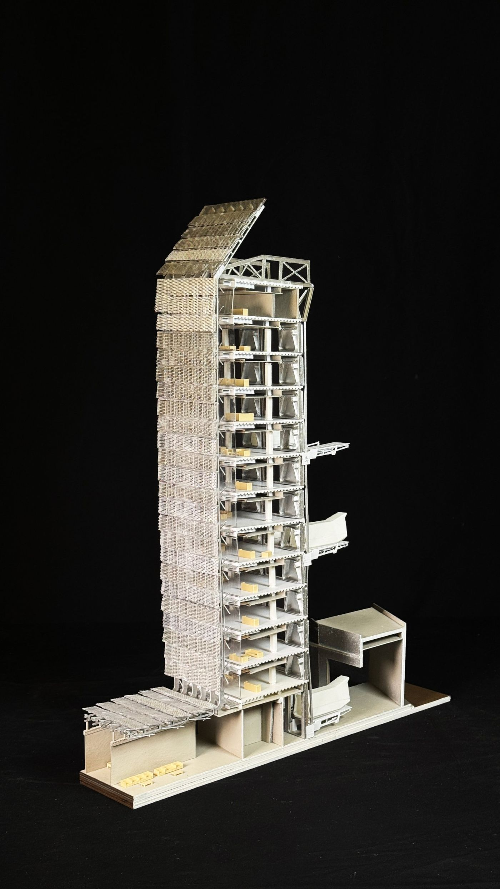
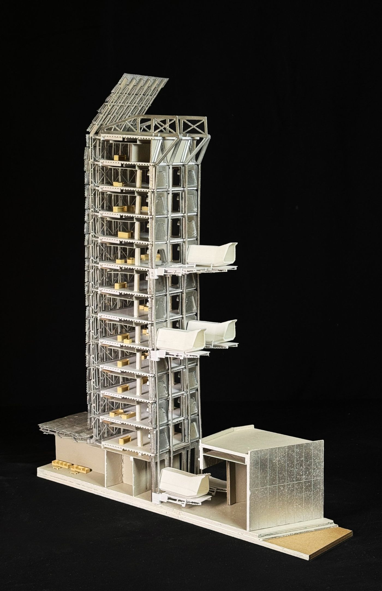
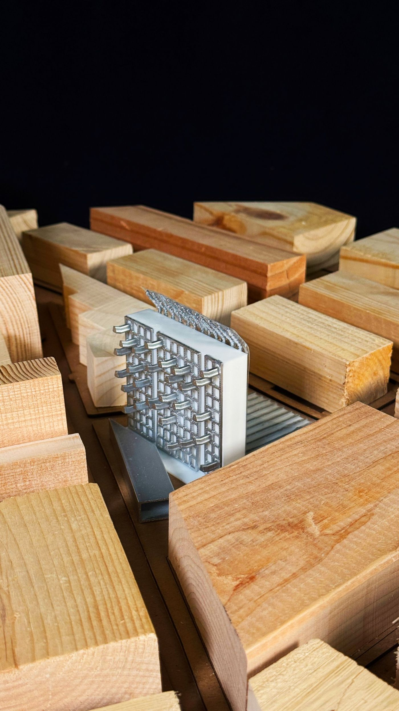
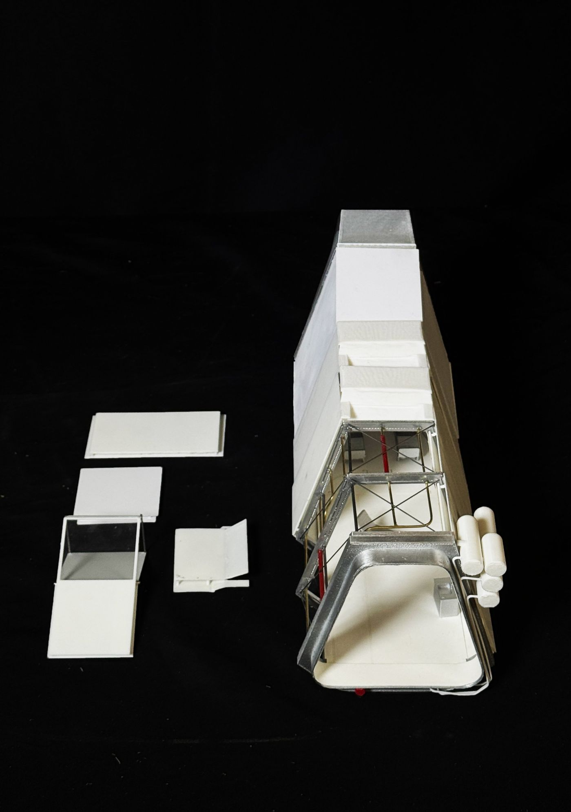
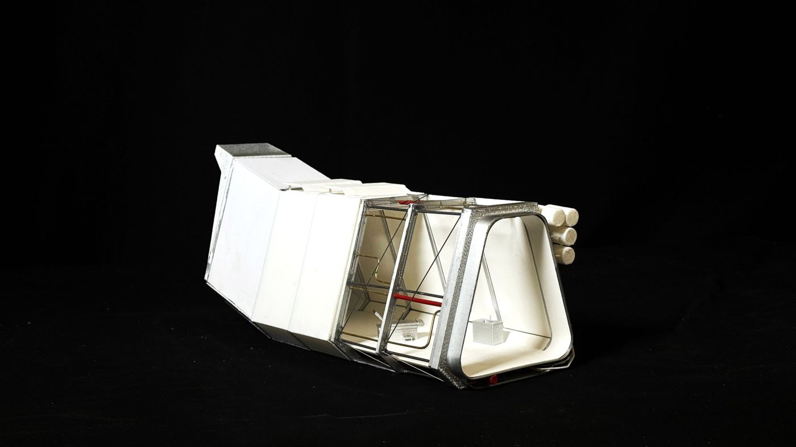
Drawings
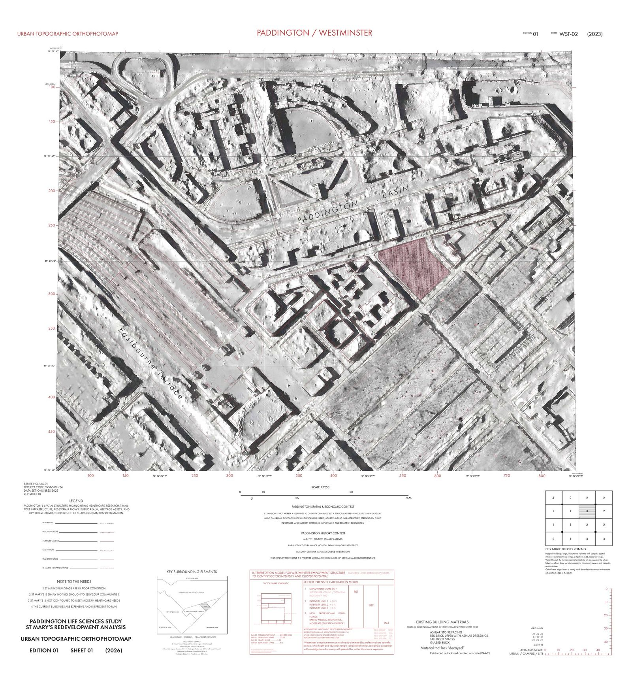
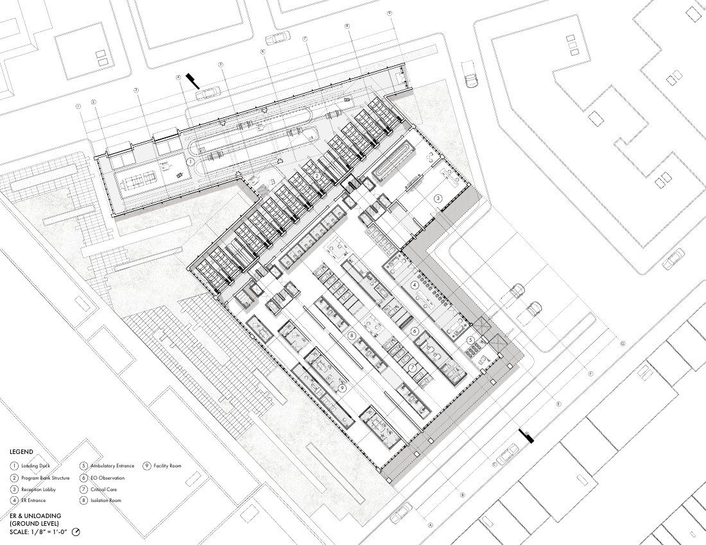
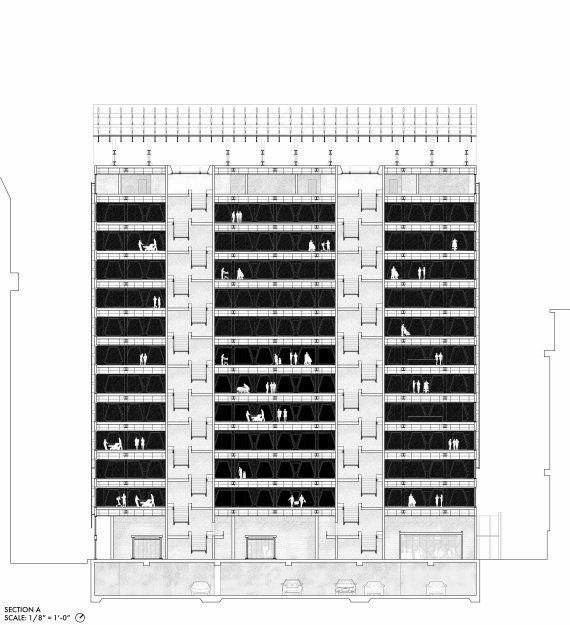
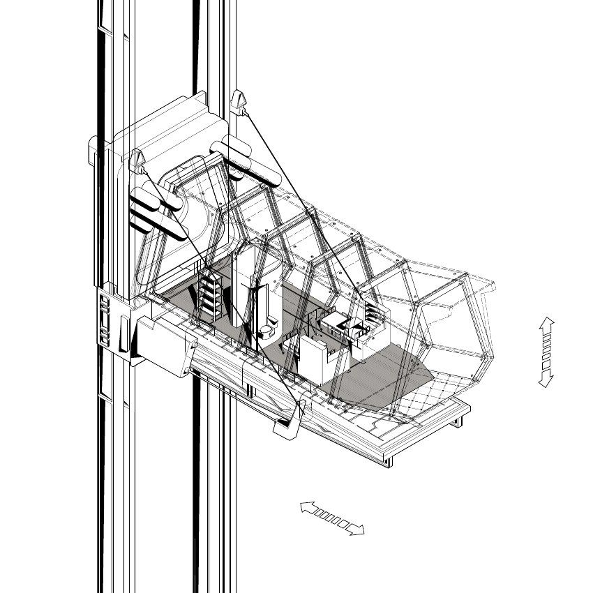
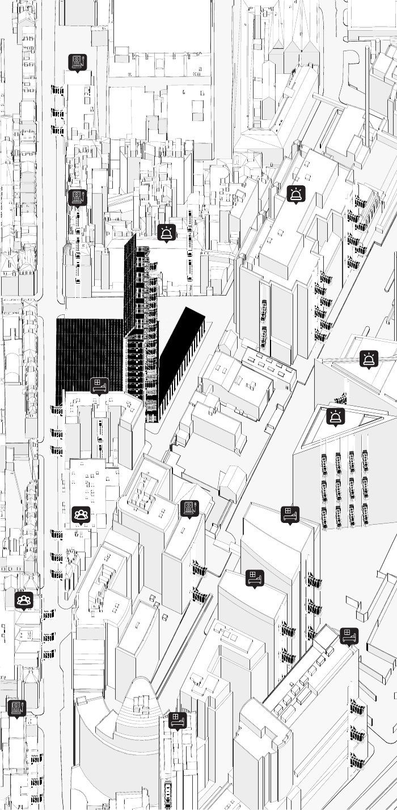